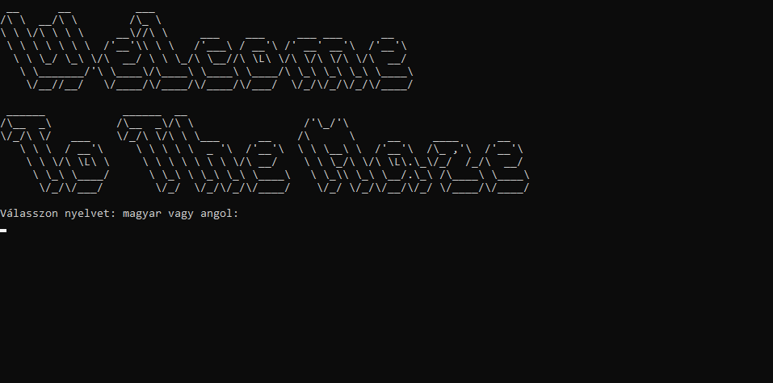

How to use
The program starts with this screen:
This is also where you can change language.
After you continue, you can:
- 1. Create a map
- 2. Load a map
- 3. Change language
- 4. Exit
If you chose the "create map" option, first, you should give the map a size.
You can put on the map objects, if you give the program the coordinates and the object.
Also, you can save, delete objects and wipe the whole map.
If you want to load a map, you should choose the "load map" option from the menu, and give the program the name of the file.
IMPORTANT: the file should be in the same folder as the program!